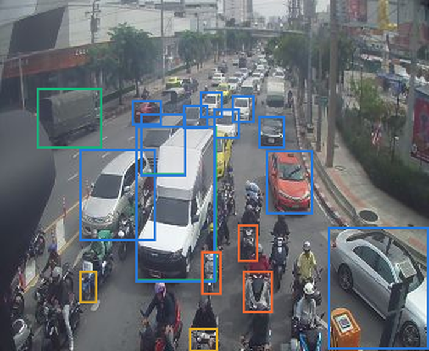
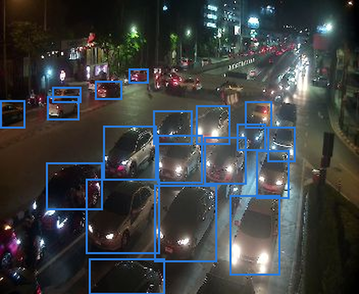

2110403 DSDE · Final project 2026/1
Does rain make Bangkok roads look more congested?
A one-week study of 61,319 CCTV snapshots (60,053 audited) from 100 BMA traffic cameras
The short answer
Heavy rain adds +5.6 pts of vehicles — and auditing the feeds unlocks 5 insights
+5.6 pts
heavy rain (>5 mm/h) vs dry hours, same camera & hour
1,086
corrupted frames removed: 507 blank + 579 frozen
7 / 21
co-located pairs with AM↔PM tidal flip (FDR q < 0.05)
≤ 1 km
local spatial spillover radius (Mantel p = 0.0005)
- Traffic DNA (k=3) splits Bangkok into all-day retail (n=44), morning-commute arterial (n=43), and evening-peak office (n=13) cameras (bootstrap ARI 0.92, OSM p = 0.011).
- Only heavy rain in the same hour raises counts (+6.6% vs +1.0% dry); signalized intersections (+10.1 pts) and surface roads (+6.6 pts) absorb the hit.
- Trustworthy counts first: 1,000 hand labels calibrated the detector, and feed audit isolated Monday 31 Aug's citywide evening anomaly (−17.8%).
2
1 · Data
One CCTV dataset plus four outside sources (3 APIs + Playwright) & labels
| Source | How we got it | What it adds |
|---|
| BMA CCTV images | Provided (scraped) | 100 cameras, 25–31 Aug 2026, 61,319 raw → 60,053 audited snapshots (~1 / 10 min, 352×288 px) |
| Longdo Traffic | Playwright (headless) | Interactive SPA road events + 2026 archive (416 BKK study-week events, 228 accidents) & 5-min Bangkok Traffic Index |
| Open-Meteo archive | REST API | Hourly modelled rainfall at each camera's coordinates → rain level per snapshot (lag 0, 1 h, 2 h) |
| OpenStreetMap | Overpass API (QL) | Nearest road class, lanes, bridges; traffic signals (100 m / 500 m), schools, hospitals, malls & rail stations within 500 m |
| sunrise-sunset.org | REST API | Sunrise, sunset, civil twilight per day → day / twilight / night label per snapshot |
| Team hand labels | Our labelling web app | 1,000 frames counted by 5 people (199 counted twice) → ground truth for detector selection & calibration |
All external responses & Playwright caches live in data/raw/external/, so the 14-step pipeline re-runs offline.
3
2 · How the components connect
From raw images to insight models & an 8-tab dashboard in one command
Sources
CCTV images61.3k JPEGs, 100 cams
Longdo TrafficPlaywright events & index
Open-Meteo & sunhourly rain & light phase
OpenStreetMaproads, signals, POIs
Hand labels1,000 frames
→
Component 1 · Data engineering · Component 2 · Data science
inventory & audittimestamps, blank/whiteout & watermark-frozen feed check
detectYOLO11-L vehicle boxes & counts per class
weather · osm · daylight · longdo3 APIs + Playwright SPA scrape, cache & join
martclean parquet tables for dashboard & insights
bake-off & raincalibration, excess over usual, DiD & LODO checks
dna · shocks · insights · longdo_valclustering, shocks, tidal, Mantel & Longdo validation
cctv.pipeline runs 14 incremental steps in order and skips any whose outputs are newer than their inputs
inventory→audit→detect→weather→osm→daylight→longdo→rain→dna→shocks→insights→longdo_val→charts→mart
→
Component 3 & 4
8-tab Streamlit dashboardoverview · map · rain · OSM · DNA · corridors · audit · explorer
Insights9 figures + report: DNA, rain DiD, tidal, spillover, shocks & Longdo
4
Component 1 · Data engineering & feed audit
Two-stage image auditing catches corrupted feeds missed by MD5 hashes
- Timestamps parsed from the filename, then EXIF; camera/hour cells with < 3 snapshots dropped.
- Stage-1 Feed Audit removed 1,086 bad frames from 61,319: 507 blank (504 morning whiteouts) + 579 frozen whose moving watermark tricked MD5 (center MAD < 1.0).
- Audit payoff: cleaned heavy-rain gap strengthens from +3.7 → +5.6 pts, DNA ARI improves 0.85 → 0.92, and Camera 206's weekend slump corrects cleanly (95 frozen frames dropped).
- Outside data combines 3 REST/Overpass APIs plus a headless Playwright scraper for Longdo Traffic road incidents & 5-min Bangkok Traffic Index.
Reproducible
uv run python -m cctv.pipeline runs the 14-step DAG and rebuilds only what is out of date; --dry-run previews the plan.
Resumable detection
YOLO runs at ~10 images/s on an Apple GPU and resumes from checkpoints cleanly.
Tested (32 tests)
32 pytest tests cover timestamps, OSM, daylight, Playwright Longdo parsing, DNA stability, blank/frozen detection, shocks, DiD, tidal flips & Mantel sync.
5
Component 1 · From pixels to counts
YOLO11 turns each frame into vehicle counts by class
Dry morning, 31 Aug 09:10
Wet evening, 28 Aug 19:25: glare and reflections make misses more likely
cartruckmotorcycle Boxes shown at confidence ≥ 0.25 for readability; counting uses 0.05.
6
Component 2 · How good are the counts?
We counted 1,000 frames by hand to measure the detector
- Stratified sample: 12 strata (time of day × rain × traffic) × 75 frames, plus 100 frames where the model saw nothing.
- 5 people, 240 frames each, through a small labelling web app on our homelab (Docker + Tailscale Funnel). The page never shows model boxes.
- 199 frames counted twice → two people differ by 2.7 vehicles per frame. No detector can look better than that.
- Pickups count as cars by hand; YOLO calls many of them trucks, so we also compare cars + trucks.
1,000
hand-counted frames (12 unusable)
2.7
vehicles: human vs human disagreement
4.9
vehicles: MAE of the chosen detector
7
Component 2 · Detector bake-off and calibration
The first detector missed 63% of vehicles, worst at night in rain
- Tried YOLO11 s / m / l / x at 640 / 960 / 1280 px and several thresholds, tune/test split.
- yolo11l, 640 px, conf 0.05 wins. Bigger inputs don't help on 352×288 frames.
- Calibration: per condition (day/evening/late × wet/dry) and class, scale by hand ÷ model.
- Bars are cross-fitted: each person's frames are corrected with factors from everyone else.
Late wet hours (34 frames) stay unreliable. No headline number depends on them: raw counts give the same result.
8
Component 2 · Analysis method
Compare each snapshot with what is usual for that camera and hour
excess = log(1 + count) − mean log(1 + count) in (camera, hour, weekday/weekend)
exp(excess) − 1 ≈ “% above usual”
Why a zoom-free baseline?
Rush hour, camera zoom and road size differ far more than rain does. Subtracting the camera-hour mean isolates within-camera shifts cleanly.
Rain levels & timing
dry · light 0.1–2 · moderate 2–5 · heavy >5 mm/h, tested at lag 0 h, 1 h earlier, and 2 h earlier across OSM & DNA groups.
Honest uncertainty
2,000 camera-day cluster bootstraps (for rain & DiD), 5,000 tidal / 2,000 Mantel & day-block permutations, and Benjamini-Hochberg FDR.
9
Component 4
What we found
Traffic DNA archetypes, rain impact & road vulnerability, tidal corridors, spatial spillover, and anomaly audit.
10
Traffic patterns
Clear weekday rush hours; cars dominate what the cameras see
Weekday evening peak at 17:00 (~23.0 vehicles/frame), morning peak at 08:00 (~19.1). Weekends are lower (−22%) and flatter.
Motorcycles are under-detected (small, often hidden), which is why calibration is done per class.
11
Traffic patterns · Weekday vs weekend
Weekends empty the office districts, not the shopping areas
- Weekends carry 22% less traffic (13.1 vs 16.7 vehicles/frame). The 06–08 commute peak vanishes; middays match weekdays.
- Cameras with 3+ malls nearby keep 81% vs 72% with none (permutation p = 0.005).
- Narathiwas & Sathorn offices keep 35–38% and Chitralada 39%; Phra Athit keeps 117% and Pratunam 100%.
One weekend only. Compared hour by hour after removing 95 frozen frames on Cam 206.
12
Finding 1 · Traffic DNA clustering
Unsupervised rhythms split Bangkok into 3 distinct road archetypes
All-day retail (n=44)
Keeps 86% weekend volume (77% on weekend mornings). Highest mall density (3.02 / 500 m) and dense urban core POIs (4.89).
Commute arterials (n=43 + 13)
Morning arterials (n=43) peak at 07–08 h (1.15×) in lower-POI corridors (2.58). Evening/office (n=13) surge 1.45× at PM near hospitals (1.92).
Validated structure & land use
k=3 structure is non-random (R²=0.44, p=0.003, ARI=0.92); held-out OSM urban_core_pois differs across clusters (KW H=8.43, p=0.011).
13
Finding 2 · Rain level and timing
Only heavy rain, in the same hour, comes with more vehicles
- Heavy rain now (>5 mm/h): +6.6% vs usual (95% CI [+2.9, +10.0]); dry hours +1.0% → +5.6 points (n=445).
- Light (−1.0%) and moderate rain (−1.3%) sit within noise of zero.
- Rain 1 hour earlier: −1.2% (zero). Traffic builds during the downpour, not after it.
- Heavy rain 2 h earlier (−4.9%, n=454) hints at clearing afterward.
Same conclusion without calibration: raw counts give +7.0% (+3.2 to +10.5%) for heavy rain.
14
Finding 3 · Does it hold up?
Heavy rain survives leaving out any day; wet evenings collapse to Mon 31 Aug
Wet and dry track each other until 18–20 h, where wet hours plunge — driven by 100% light-wet Mon 31 Aug evening (−17.8% vs usual).
Heavy rain stays +4.3 to +6.9 pts across all 7 drops. Dropping Mon 31 Aug flips wet evenings from −6.5 to +3.0 pts.
15
Finding 4 · Where
Per camera, “any rain” looks negative because 85% of wet hours are light rain
The map compares all wet hours with dry hours at each camera. Average: −1.9%, with 59 of 100 cameras below zero.
That is not a contradiction of +5.6 pts. Of 30,570 wet snapshots, 25,924 are light rain (−1.0%) and only 445 are heavy (+6.6%), so “any wet” blends away heavy storms.
Lesson: rain impact depends nonlinearly on intensity — pooling light drizzle with downpours hides the congestion spike.
16
Finding 5 · Infrastructure rain vulnerability (DiD)
Signalized intersections & surface roads take 2× the heavy-rain hit
Signalized & surface hotspots
Signals (≤100 m): +10.1 pts [+4.5, +15.7] vs Mid-block +4.3 pts (DiD +5.8). Surface roads: +6.6 pts [+2.6, +10.7] vs Bridges −1.3 pts (DiD +7.9).
Nulls that protect rigor
BTS/MRT proximity shows zero protection (+5.8 vs +5.5 pts, p=0.958); primary highways (+5.3) vs secondary roads (+7.0) do not differ (p=0.648).
DNA split & statistical power
Morning-commute arterials spike +6.7 pts vs All-day retail +5.3 pts. Interaction DiD CIs cross zero (p=0.112, 0.157) with 445 heavy frames.
17
Finding 6 · Tidal flow & directional asymmetry
Opposite-direction cameras reveal statistically significant reversible-lane corridors
Consistent citywide reversal
Among 21 co-located pairs (≤100 m), 14 flip sign between AM (06–09 h) and PM (16–19 h), and 7 survive BH FDR q < 0.05 (5,000 permutations).
Ratchadaphisek Flagships
224–225 (Criminal Court, 22 m): swing 0.270 (4/5 weekdays, q=0.004). 124–125 (Police Box, 40 m): swing 0.238, flips 5/5 weekdays (q=0.004).
CBD & river-bridge candidates
603–604 Silom–Naradhiwas (25 m, swing 0.225, q=0.019), 1132–1078 Wat Suwan (q=0.019), 1368–546 Lan Phra Rup (q=0.033) & 26–1195 Mahai Sawan (q=0.047).
18
Finding 7 · Spatial spillover & anomaly audit
Local congestion decays within 1 km; 262 shocks isolate Mon 31 Aug
True spillover radius ≤ 1 km
Removing citywide hours shrinks raw r (0.093 at >10 km) to local residual r: +0.065 (<0.5 km) → +0.042 (0.5–1 km) → +0.003 (1–2 km). Mantel p = 0.0005.
Honest pairwise FDR limit
Nearest neighbors (≤2 km, n=95) show median local lag-0 r=0.057, lag-1h=0.039; 0/442 individual links clear day-block FDR <0.05 (top: 119–1112 r=0.46, q=0.32).
262 traffic shocks (|z| ≥ 2.5)
207 localized surges (e.g. Triam Udom 239 z=+4.87), 18 corridor, and 37 citywide shocks led by Mon 31 Aug evening (−17.8%; 414 z=−7.36).
19
Finding 8 · Longdo Traffic cross-validation (Playwright)
Longdo probes prove wet-night glare & expose 3.1× accident risk on bridges
Dry vs. wet sensor proof
CCTV tracks Longdo's GPS-probe index strongly in dry hours (ρ=0.88) but halves in rain (ρ=0.44). On Mon 31 Aug eve, Longdo rises +11.1% (6.15) while CCTV drops −17.7% — proving glare.
Bridges = 3.1× accident risk
Bridges average 64.9 accidents/yr (≤500 m) vs 21.0 on surface (ρ=0.34, p<0.001). Traffic DNA separates 2026 road events (KW p=0.027); Mahai Sawan (167/yr) & Wat Suwan (66/yr) are also tidal corridors.
11 shock–incident matches
11 CCTV shocks (|z|≥2.5) match Longdo incidents ≤1 km, ±1 h — Rama 9 (76 m, −48.8%), Phayathai (109 m, −48.5%), Phyathai 2 (671 m, +82.2%); signed means cancel (−1.1%, p=0.64).
20
Component 3 · BI dashboard
Explore every camera, DNA archetype, tidal pair and snapshot yourself
Overview: KPIs and traffic vs rain through the week
Camera map and camera explorer (raw image for any snapshot)
8 Tabs: overview · map · rain vs congestion · road context (OSM) · traffic DNA · vulnerability & corridors · anomalies & CCTV audit · camera explorer. Filters: dates, day type, light phase, road class. uv run streamlit run src/cctv/dashboard.py
21
Limits
A well-checked case study — honest about sample size & power
- One week (445 heavy-rain snapshots): sufficient for the main +5.6 pt effect, Mantel test, and Longdo index validation, but widens interaction DiD CIs (p=0.11–0.16) and restricts per-link day-block FDR power.
- Area-level hourly rain: Open-Meteo is gridded and averages short downpours over the full hour.
- Counts ≠ speed & wet-night glare: Longdo probes confirm YOLO loses recall in wet evening glare; 10-min snapshots cannot measure speed directly.
- Imperfect human labels & lens blur: human disagreement averages 2.7 vehicles/frame.
Next steps
Extend scraping across a full monsoon season with TMD rain gauges; fuse Longdo GPS probes with CCTV to correct wet-night glare; pilot tidal lanes on Ratchadaphisek & Mahai Sawan.
22
Summary
What we built and what we learned
Data engineering
Audited 61.3k frames down to 60,053 usable snapshots (−1,086 blank/frozen), YOLO11-L + 3 APIs + Playwright Longdo scraper in a 14-step DAG (32 pytest tests).
Data science
1,000 hand labels, cross-fitted calibration, Traffic DNA (ARI 0.92), cluster-bootstrap DiD, 5,000-perm tidal asymmetry, Mantel sync & Longdo validation.
Dashboard
8-tab Streamlit app covering maps, OSM context, DNA clusters, tidal pairs, spatial links, shocks and raw frame inspection.
Key insights
Heavy rain → +5.6 pts (signals +10.1). 3 DNA archetypes. 7/21 FDR tidal corridors. ≤1 km spillover. Longdo: dry ρ=0.88 → wet 0.44; bridges 3.1× accidents.
Code, slides and video: see the Google Drive link on myCourseVille. Thank you!
23